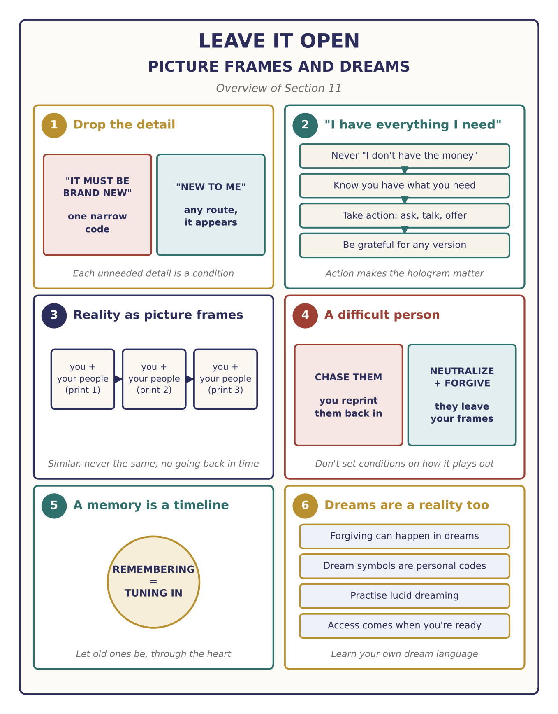
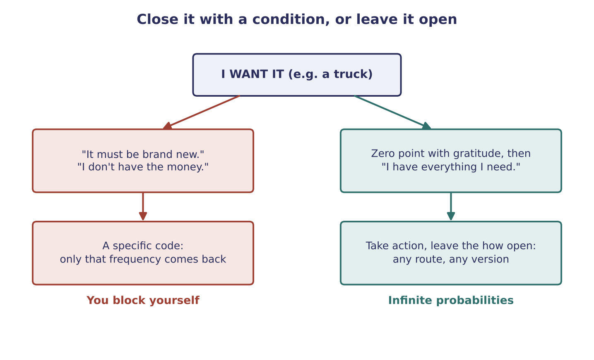
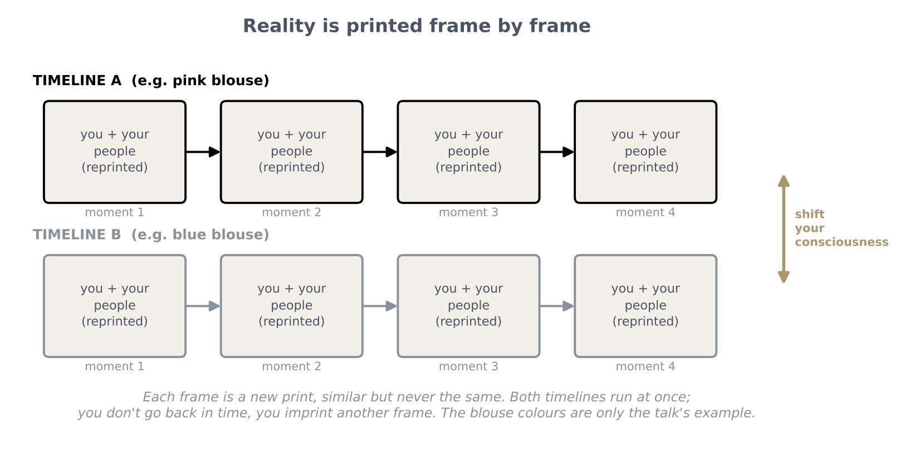

Q & A: Leave It Open, Picture Frames and Dreams
Dropping the conditions that block what you want, reality as frames printed moment to moment, difficult people, memory and dreams (live Q&A)

Key teachings
11.1Be happy first
Don't make your happiness depend on finding what you want. Hold the happiness first, and it helps you find something that matches it. That is described as "the best" way round.
11.2A caution on cryptocurrency
This is described as a transitioning time, but the advice is not to put 100% trust in it. The guidance suggests some platforms could become another way of control. Choosing between coins is like gambling, or another stock market, because you can't see what is coming behind the scenes. Anyone can create a currency, so there is no need to wait for big institutions to pick one.
The deeper point: put your trust in generosity and sharing through Energy Philanthropy (see 5.1), because the aim is an abundance society, not a new platform of control. The talk also floats an idea that a one-off distribution to everyone could pay off debts and free humanity overnight; it is offered as an idea, not something taught or predicted (compare 8.2). This is a caution as given in the talk, not financial advice.
11.3Drop the detail, and it appears
Asking again and again for something "new" gives the field one narrow frequency. Once that condition is released ("it only has to be new to me"), the whole structure is free to deliver through any probability in any reality, and what you wanted can appear almost at once, often close by. Your own shift and the other person's decision happen together, because you are creating your reality (see 10.3).
The lesson: notice the details you have attached that you don't actually need. Each one is a condition (see 1.5, 4.2).
11.4"I have everything I need", then take action
When the thing appears but the money doesn't seem to be there, don't say "I don't have the money". That sentence is a code, and the field will produce situations that keep the money away (see 9.1). Money is an illusion inside the structure; know you have everything you need, without knowing which way it will come.
Then take action. Treat it like a game: what can I do to get this? Talk to the person, ask whether something can be worked out, such as payments. Action infuses your hologram and makes it matter; the inner work alone is only the first part.
Leave everything open, and don't speculate. The answer may be no today and yes later, or it may come from someone else entirely, or as something similar rather than the exact thing. Whatever comes, be grateful: gratitude and understanding are the zero point, which opens infinite probabilities (see 2.1). If it doesn't happen, keep manifesting and don't block anything.
When the emotion drops back to "I don't have it", lift it again: neutralize by understanding what just happened, then overwrite with the knowing that you have it, more potently than the drop (see 2.6). Mastery is exactly this: steering the shift, knowing where to tune next, without expectations.

11.5Reality as picture frames
Question: if I shift into another reality, does the present one carry on without me? Would I become a missing person to my loved ones?
You shift moment to moment, so fast it looks like you aren't moving; in fact it is fractal, a new Earth each moment (see 2.7, 5.4). Repeat and crystallize something different, and you create a different timeline of yourself. Both timelines run at the same time, and consciousness can shift back and forth between them.
Each time, you don't only project a new you: you imprint everyone and everything in your hologram too, like a copy, similar but not the same. Think of picture frames: print one photo, then the next moment another, and lay them side by side. In one you wear a pink blouse, in the other a blue one, and you can see both. So you never go back in time; you imprint another reality to see what happened there. And it is never identical, because consciousness keeps moving in a spiral (see 5.8).
The answer doesn't say directly whether loved ones would notice you gone. What it does say is that you reprint the people around you into each new frame, so they come with you as new imprints.

11.6When someone keeps causing problems
If a person in your frames drops their frequency compared with yours, then, through synchronicity and in one of infinite ways (a move, a change of circumstances), they stop being imprinted into your reality. Or they change, and you both forgive and move on positively. You can't know which, so don't set conditions on how it plays out.
The condition is that you neutralize at zero point and understand the situation, through the heart and forgiveness. Going after them, or being mean, keeps projecting a frequency tied to them, so you print them straight back into your reality. The more you let it be through the heart, the sooner it resolves (see 6.5, 2.10).
That doesn't mean the person stops existing. They continue in other timelines.
11.7A memory is a look into another timeline
When you remember someone, even a difficult relationship, you are tuning into another timeline. You can recall it only because your consciousness knows that reality's vibrational sequence (see 5.4). Notice where you tune, and let old ones be through the heart.
11.8The heart: the purest frequency
The hardest part for everyone is to pull yourself out of a situation, give gratitude for where you are, and project only the positive. Your job is to project positive frequency through the heart and understanding, the highest frequency there is. Negative consciousness cannot hold the heart's frequency: with no conditions it is the purest, cleanest one in the structure, flowing both ways. That is why manifestation becomes easy once you share through the heart, sometimes bringing more than you ever dreamed of (see 4.2, 10.2).
11.9Dreams are another reality
Forgiveness and shifting can happen in dreams as well as awake, because the dream state is another state of reality (see 8.9). Dream symbols are personal codes: a good car might mean prosperity for one person and a new home for another, so learn your own. Practise lucid dreaming to connect this way (see 8.14). Not everyone is allowed to do everything there; access comes when you are ready.
The recording ends during this answer.
The method — Leave It Open
Use it for anything you want to manifest, especially when the money or the route isn't visible yet:
- Be happy first. Don't make your joy wait for the result.
- Strip the details. Ask yourself which conditions you've added ("brand new", "from this person", "by Friday") and drop the ones you don't need.
- Catch "I don't have…" the moment you think or say it. Pull out and go to zero point with gratitude: "Thank you for showing me where I'm at."
- Overwrite: "I have everything I need." Feel it more strongly than the drop.
- Take action. Play the game: what can I do? Ask, talk, offer what you can.
- Leave it open. Don't speculate on how or from whom. It may come another way, or as something similar; be grateful either way.
- Keep going. If this route closes, keep manifesting and lift the emotion again each time it drops.